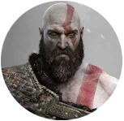

Kratos, o Fantasma de Esparta, começa sua jornada como um general espartano, ocasionando Ares, o deus da guerra, em troca de poder. Traído por Ares, ele acidentalmente mata sua família e, em busca de redenção, desafia os deuses do Olimpo. Após derrotar Ares e se tornar o novo deus da guerra, Kratos se volta contra os deuses, destruindo todo o panteão grego em sua sede de vingança. Mais tarde, ele se exila em Midgard, onde vive uma nova jornada ao lado de seu filho Atreus, enfrentando desafios da mitologia nórdica